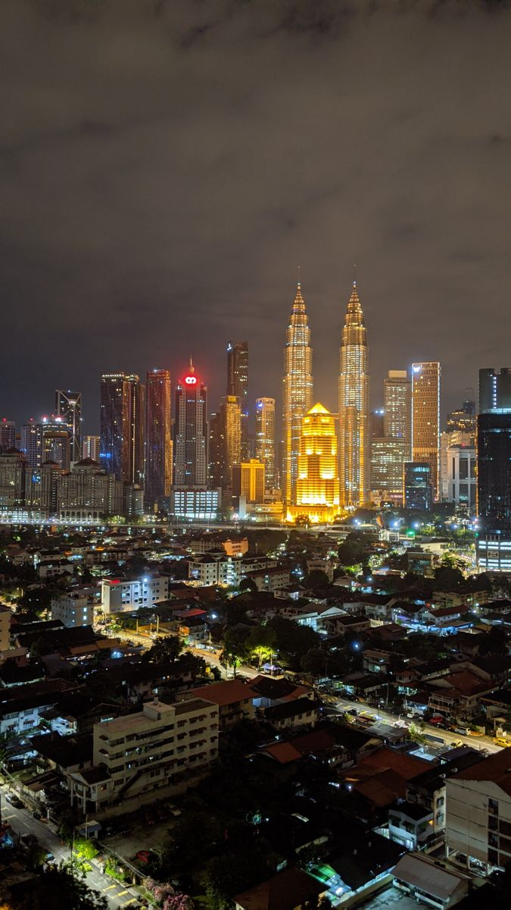

The culture of Kampung Bharu is deeply rooted in Malay traditions and customs. Here are some aspects of the culture you might find in Kampung Bharu:
Traditional Architecture: Kampung Bharu is characterized by traditional Malay wooden houses, known as "rumah panggung." These houses are built on stilts and have intricate carvings and designs, reflecting the traditional architectural style of the region.
Community and Kinship: The village fosters a strong sense of community and kinship among its residents. Families often live in close proximity to each other, and communal activities are common, strengthening the social fabric of the village.
Malay Heritage: The village is proud of its Malay heritage and preserves many cultural practices. Traditional ceremonies, such as weddings, engagements, and religious celebrations, are observed with great enthusiasm and adherence to customs.
Traditional Cuisine: Kampung Bharu is known for its delicious traditional Malay cuisine. Local delicacies and specialties, such as Nasi Lemak, Rendang, Satay, and various kuih (sweet snacks), can be found in the area.
Arts and Crafts: The village has a rich tradition of arts and crafts. You can find local artisans creating beautiful batik fabrics, traditional handicrafts, and other artistic products that reflect Malay culture.
Cultural Festivals: Kampung Bharu hosts various cultural festivals, including Hari Raya Aidilfitri (Eid al-Fitr), Hari Raya Aidiladha (Eid al-Adha), and Maulidur Rasul (Prophet Muhammad's birthday). These festivals are celebrated with much joy and participation from the entire community.
Traditional Music and Dance: Traditional Malay music and dance performances are sometimes showcased during special occasions or events in Kampung Bharu. These performances highlight the artistic talents of the villagers and keep the cultural heritage alive.
Market and Trade: The area is known for its bustling market, where you can find local produce, spices, traditional snacks, and other items. The market serves as a central hub for daily necessities and a gathering place for villagers.